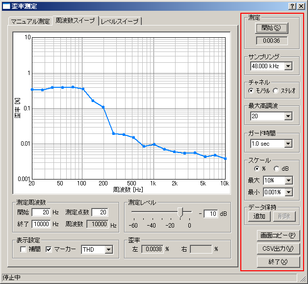

| 項目 | 説明 |
|---|---|
| 測定 |
[開始（S)]ボタンで測定を開始します。
ストップウォッチ機能があり、開始ボタン押下時より時間カウントを開始し、開始ボタンの下にあるスペースに表示されます。測定終了時までカウントされます。
|
| サンプリング | A/Dコンバータのサンプリング周波数を設定します。 |
| チャネル |
モノラル： Lチャンネル（水色）を表示。
ステレオ： Lチャンネル（水色）とRチャンネル（ピンク）を表示。
|
| 最大高調波 | 何次までの高調波を測定するかを設定します。（大きくした方が歪率の値はより正確になりますが、CPUの負荷が高くなります） |
| ガード時間 | 測定信号を出力してどれくらい待ってから歪を測定するかを設定します。測定信号が変化したときの、過渡的な変動を除くために設定します。 |
| スケール | 歪率の単位（パーセント[%]またはデシベル[dB]）とグラフのスケールの最大値、最小値を設定します。 |
| データ保持 | 測定済みのデータを指定した色で保持し、他の測定値と比較することができます。 |
| 画面コピー | クリックした時点のグラフを別ウィンドウで開きます。同時にいくつでも表示可能です。 |
| CSV出力 | 測定したデータをCSV形式でファイルに出力します。 |
| 終了 | 歪率測定のウィンドウを閉じます。 |